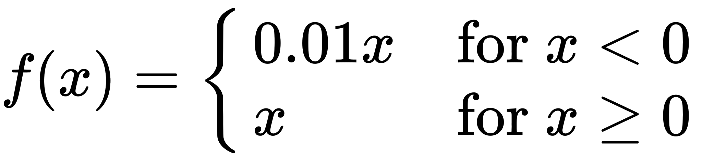

Building Blocks¶
In this section we will do a quick overview of neural network components at a conceptual level, paying special attention to how they are used within modern source separation systems.
Neural networks, sometimes called deep learning (or some variant of “neural networks” and “deep learning” like “deep nets”), are a type of machine learning algorithm that have become very popular in the past few years. While we will cover gradient descent in a later section, we will not fully dive into the mathematics neural networks.
There are many, many resources for learning about neural networks, so we won’t repeat everything here, but we do want to leave you with some intuition about how the work and importantly, how they work within the source separation context.
On this page we will discuss the most common types of neural network components used in source separation systems.
Neural Network Components¶
Layers¶
Neural networks are composed of layers, each of which has a set of weights that get updated through gradient descent.
When we talk about network layers, we usually talk about forward and backward passes through the network. During the forward pass, each layer receives input from a previous layer or input data and transforms the data by multiplying each component of the input by a set of weights, the result of which is the output. Usually the way the inputs are ingested and outputs calculated is a little more complicated that this, but what’s important to know is that as an example input gets pumped through a neural network it goes through many discrete transformations, each of which is a layer.
It’s important to know that almost all deep net source separation systems are trained with some variant of Stochastic Gradient Descent, which means that data is passed through each layer in minibatches (sometimes referred to as just batches).
Tip
An important first step for debugging neural networks is understanding
the input and output dimensionality at each layer. In many frameworks
(e.g., pytorch, or tensorflow),
the dimensionality is referred to as each layer’s shape.
In many cases, getting the shapes set up right will get you 90% of the way there to a working system.
Fully Connected Layers¶
{kind=link}
Fig. 17 An input layer, a fully connected hidden layer, and an output layer. Image Source¶
{kind=link}
In a fully connected layer, every node is connected to every input node and is connected to every output node. These are sometimes called linear layers because, without an activation function, they apply a linear transform to the input data.
Fully connected layers have many uses, but a common use is to expand or compress the dimensionality of the input for the next layer. In this sense, they can be thought of as a kind of “glue” between other components.
Masking¶
Within source separation, fully connected layers are usually used to create masks, changing the dimensionality of the previous layer so that it matches the dimensionality of the output (e.g., the number of frequency components in a spectrogram or number of samples in a waveform). The fully connected layers usually have an activation function when used as a mask, discussed further below.
Reshaping¶
As we mentioned, linear layers are well suited to expand or compress the dimensionality of the input data. There are many ways we can take advantage of this property within source separation.
Here’s a simple example: Let’s say we have a source separation system
that applies a mask to a spectrogram that has 513 frequency components and
400 time steps. When we include the batch dimension, the output shape of
our fully connected layer might look like (16, 400, 513), where the
first dimension is the batch (with 16 examples). But if we want this
system to make two masks, we can change the output dimensionality of
this fully connected layer to be (16, 400, 1026),
where now we’ve doubled the frequency dimensions (\(513 \times 2 = 1026\))
to indicate that we have two sources. Then we can reshape the output
such that it looks like (16, 400, 513, 2), where we’ve expanded the frequency
out into the last dimension to take care of both of our sources.
The network will learn that this means there are two sources.
A similar thing happens with Deep Clustering (covered on the next page). We use a linear layer to produce a high-dimensional embedding space and then reshape it so that we can make sense of it.
Recurrent Layers¶

Fig. 18 Recurrent layers have self-connected loops. When the loops are “unfolded” they show how each loop represents a different time step. Image Source¶
Recurrent layers are layers that have connections to themselves, as well as to the next layer. In other words, some of the outputs of the nodes are plugged back into the inputs of the same nodes, making loops so that information to persist.
Because of these loops, recurrent layers are particularly well suited for learning data that varies over time, like audio. Each loop can ingest the next set of data in steps. The way that recurrent layers are used in source separation is that they ingest the audio as it changes along time. So, for example, if we have a spectrogram that is input into a recurrent layer, the recurrent layer will ingest one column of the spectrogram at a time (i.e., all of the frequency components or the entire spectrum at that time step).
The number of units recurrent layers have defines their receptive field or the amount of time steps the layer can see at any given time. So for instance, if a spectrogram has 1000 time steps but the recurrent layer only has 400 units, only 400 time steps of the spectrogram will be processed by the recurrent layers at a time. It will start with the first time step, and work its way across every one of the 1000 time steps, advancing by one step at a time. Because of this, if you train a recurrent layer that only has 400 time steps, it can accept spectrograms of any length. This is not the case for convolutional layers, which we will cover shortly.
{kind=link}
Fig. 19 LSTM cell Image Source¶
{kind=link}

Fig. 20 GRU Image Source¶
{kind=link}
The two most common types of recurrent layers are Long Short-Term Memory (LSTM) layers and Gated Recurrent Unit (GRU) layers. Although there are slight differences between the two, what’s important to know is that these layers are able to retain information in a way that is stable, whereas naive recurrent layers like those shown in Fig. 18 are not stable.
For source separation, researcher mostly use LSTM layers. We are unaware of any reason that source separation researchers have settled on LSTMs over GRUs, but it is surely the case that GRUs are much less common in the literature than LSTMs.
For more details on how LSTMs and GRUs work, see Christopher Olah’s terrific blog post.
Bidirectional or Unidirectional?¶
It is very common to see recurrent layers that are bidirectional, meaning that they actually contain two sets of units: one that advances forward in time and another that advances backward in time. The bidirectional case can thus “see the future” because it starts at the end of an audio clip. Because of this you should not use bidirectional recurrent layers if you need a real time system.
Unidirectional recurrent layers are called causal and bidirectional recurrent are called noncausal. If an LSTM or GRU is bidirectional, it is denoted as BLSTM or BGRU, respectively.
Watch out!
There is some sloppiness when research papers report the details of their BLSTM/BGRU layers. For instance, if a paper says they used a “BLSTM with 600 units”, does that mean 600 units in each direction or 300 in each direction (600 total)?
Personally, we assume that “600 units” means 600 in each direction, because that’s how the pytorch API configures it but this might not always be the case. Beware of this when reading papers!
Convolutional Layers¶
Convolutional layers are similar to fully connected layers shown above, except that now each node is only connected to a small set of nodes from the previous layers. Reducing the amount of connections makes the network less prone to overfitting to the training data. Convolutional layers also have the property that they are translationally invariant.
Convolutional layers are related to the mathematical/signal processing concept of convolutions in that convolutional layers learn a set of filters from a sliding window of the input layer. This sliding window is the receptive field of the convolutional layer. A depiction of convolutional layers are shown below.
The Shapes of Convolutions¶

Fig. 21 Convolution with 2D input with a 3x3 kernel and stride 1. Blue maps are inputs, and cyan maps are outputs. Image Source¶

Fig. 22 Convolution with 2D input with a 3x3 kernel and stride 2. Blue maps are inputs, and cyan maps are outputs. Image Source¶
One tricky thing about convolutions is that their output shape can change wildly depending on how you set up the layers. There are four main parameters that effect the output shape of a convolutional layer: kernel size, stride, padding, and dilation.
The kernel size dictates the number and shape of nodes from the previous layer that nodes at the current layer see (the shape of the window), and the stride dictates the distance that the window moves between adjacent input nodes.

Fig. 23 Convolution with 2D input with a 5x5 kernel and padding of 1. Blue maps are inputs, and cyan maps are outputs. Image Source¶
Fig. 24 Dilated Convolution with 2D input with a 3x3 kernel and dilation factor of 1. Blue maps are inputs, and cyan maps are outputs. Image Source¶
The padding determines what to do at the edge of the input. If there is no padding, then the inputs at the edge are only covered by the colvolutional layer nodes at the edge, but if there is padding then the inputs at the edge get covered by more convolutional nodes. Padding is shown in Fig. 23.
Dilation determines the spacing between the input nodes that each convolutional node sees. This allows each node to understand more context than if no dilation is used. A gif of dilation is shown in Fig. 24. Dilation is perhaps most famous in the audio world because of its use in Wavenet [ODZ+16], which used dilated convolutions in an autoregressive manner to produce one sample of a waveform at a time. 1
Transpose Convolutions
Typically the output of convolutional layers have a smaller dimensionality
than the input layers, however we might want the opposite to happen
where we expand the input. This is called a transpose convolution layer or
deconvolutional layer, and the process is similar to the regular
convolutional layer.
Pooling

Fig. 25 A max pooling operation on a matrix. Image Source¶
{kind=link}
An important part of using convolutional layers is pooling or
reducing the dimensionality of a convolutional layer using some
non-linear function, like a max() operation. Pooling splits the
input into non-overlapping regions and performs the downsampling
function on each region. Pooling is technically
a separate layer, but it is almost always found after a convolutional
layer. The most common type of pooling is max pooling, although
other types of pooling exist like average pooling.
Further Reading
For further information see this paper, or see the animations at this Gitub link to provide more intuition about how these parameters affect the convolutional shapes. [DumoulinVisin16]
In Source Separation¶
In source separation, convolutions have been used to great effect in the waveform and time-frequency domains. In the waveform domain, 1D convolutions are used to input and output waveforms, and in the time-frequency domain 2D convolutions are used to input spectrograms and output masks.
Fig. 26 Learned filterbanks from the last convolutional layer of two Tasnet models (covered on the next page), which was trained on speech. Figure (a) shows the learned filterbanks of a causal model and Figure (b) shows a noncausal model. Notice how most of the energy of the filterbanks is in the range of human speech. Image used courtesy of Yi Luo. [LM18]¶
When we say that convolutions learn a set of filters (or, a filterbank), this relates to the concept of filters that we normally think of in audio, like high-pass, low-pass, or band-pass filters. For instance, when we learn a 1D convolutional layer from a waveform, each of the nodes is learning a filter from the data. For instance, Fig. 26 shows the result of two networks with convolutional layers that output a waveform. The image shows the learned filterbanks from the networks, which were trained on human speech.
Unlike recurrent layers that can process one time step at a time,
convolutional layers have to have a full example with the exact input
shape in order to process data. For example, if we have a spectrogram
with 512 frequency bins and 1000 time steps above, but our first convolutional
layer requires an input shape of (512, 128), we have to split our
spectrogram into 8 windows of size exactly 128 and include the necessary
padding on the last window.
Convolutional layers can sometimes have a hard time with edge effects. For instance, when predicting a waveform it is possible that a convolutional neural network might learn discontinuities, which might lead to audible artifacts. One way around this is to output overlapping windows similar to how an STFT is computed. Going back to the above example with a spectrogram, we might instead split it into 16 windows of the same length, but overlap with on another.
For further reading, see the Wikipedia article on Convolutional Networks, or Stanford University’s course webpage for CS231.
Activation Functions¶

Fig. 27 How an activation function is applied in a network. Each node has a “weight”, which get combined and passed through the activation function. Image Source¶
{kind=link}
Activation functions change how much one layer influences the next layer. For each node in a layer, the activation function “decides” whether that node should be “on” or “off”. Activation functions are usually non-linear and always differentiable.
It is usually important to have at least one layer with a non-linear activation function. A list of many activation function can be seen on this Wikipedia article. The most common ones seen in source separation are discussed below:
Sigmoid¶

Fig. 28 A plot of the Sigmoid activation function. Image Source¶
{kind=link}
The sigmoid activation function is shown in Fig. 28 and
is used very commonly as the output of a neural net that creates masks.
Because it is bounded in the range \([0.0, 1.0]\) it is perfectly
suited to make Soft Masks (or Ratio Masks). It is sometimes denoted \(\sigma\).
Tanh¶
{kind=link}
Fig. 29 A plot of the tanh activation function. Image Source¶
{kind=link}
The tanh, or the hyperbolic tangent, activation function is
shown in Fig. 29. Tanh is similar to sigmoid, but it is bounded
in the range \([-1.0, 1.0]\), instead of \([0.0, 1.0]\) like sigmoid.
For this reason it is more common to find a tanh in the
middle of a source separation network than at the ends.
ReLU & Friends¶
{kind=link}
Fig. 30 A plot of the ReLU activation function. Image Source¶
{kind=link}
The Rectified Linear Unit, or relu activation function is shown
above in Fig. 30. It is \(0.0\) if the input is less than \(0.0\)
and is linear with slope \(1\) otherwise:

ReLUs are sometimes used to make masks, and some systems use them to output waveforms as well.
{kind=link}
Fig. 31 A plot of the PReLU activation function. Image Source¶
{kind=link}
Two related activation functions to ReLUs are the Leaky ReLU and PReLU.
The Leaky ReLU is similar to the regular ReLU, but instead of the output being \(0.0\) below \(x=0.0\) it is ever so slightly above \(0.0\):

And PReLU has a learnable network parameter \(\alpha\) that defines the slope below \(x=0.0\):

These are sometimes used in middle layers or as an activation for the final layer when outputting a waveform.
Normalization¶
Normalization is the practice of making sure all of the inputs to a network or a layer within a network all look the same from a statistical standpoint. Practically, this means that all of the data should have the same mean and standard deviation. Changing the mean shifts the data, which literally means adding or subtracting the calculated mean to every data point, and changing the standard deviation scales the data, which literally means dividing every data point by the calculated standard deviation. This process makes training neural networks much more stable during training.
There are a few different methods for which data to include in the mean and standard deviation calculations. The most common types of normalization in source separation are outlined below.
Batch Norm¶
Batch normalization, or batch norm, [IS15] computes the mean and standard deviation of each mini-batch during training and normalizes the data using those statistics. Like pooling, batch norm is considered another “layer” of a neural network and might be found in various places in a network’s architecture, including at the input layer.
Whitening your Data¶
Some researchers will normalize their whole dataset as a preprocessing step. This is called whitening the data. The concept is the same: the mean and standard deviation of the whole dataset is used to shift and scale the data. Because we need to access all of the data, this must happen before we train a network (recall the net only sees mini-batches).
Tip
Though popular in speech separation research, we have not found whitening to be of any practical use in music separation.
Learnable Normalization¶
The final method we will outline in detail is having the network learn to normalize its inputs by itself. In this case, the system has two learnable parameters for shifting and scaling. These parameters are optimized using gradient descent, just like the other weights of the net. When applied as a shift and scale function to network inputs, the net will use it to normalize its input data based on what it determines works best.
Open-Unmix, which we will discuss in more detail on the next page, uses a learnable normalization parameters to great effect.
Other Normalization Techniques¶
There are many other normalization techniques that have been developed and quite a few have been used in source separation research such as instance norm [UVL16]. A great resource for learning more about neural network normalization techniques is outlined in the Group Normalization paper: [WH18]
Dropout¶
Dropout is a regularization technique that improves a network’s ability to generalize to unseen data. This is a simple technique whereby at each training step some percentage of the nodes are set to 0. This is very widely used in source separation systems and is essential to making them work well.
Spectrogram Considerations¶
While waveforms can be input into a neural network, sometimes it is desirable to explicitly represent frequency information by having the network input a spectrogram. As such, the spectrograms must be computed from the waveform to be ingested by the network. This can be done as a preprocessing step, with all of the spectrogram data stored to disk as a cache and loaded during the training process, or the spectrograms can be computed on-the-fly when the network needs them. Precomputing the spectrograms is usually quicker, but usually requires a separate step to compute everything which might take a significant amount of time and disk space to store the data. On the other hand, computing spectrograms on-the-fly requires more computation for each example, and might bottleneck your training procedure if not done efficiently.
Many times it makes sense to decrease the size of the spectrogram. This is because when we do this it allows us to make our networks bigger, and thus it has more capacity to learn better. One way we can decrease the size of the spectrogram and still preserve some features that are relevant to human hearing is by converting the a linear-scale frequency axis to a mel-scale frequency axis. Details about this are discussed
The computation of a spectrogram is completely differentiable, which means that we can embed static, non-learnable STFT calculations in our network architecture to make waveform-to-waveform models, if we so choose. This is useful if you want to use a spectrogram model with one of the waveform losses outlined below. But beware: this might noticeably slow down your training process.
Learned Filter Banks¶
Loss Functions and Targets¶
The final piece of the neural network puzzle is loss functions. As we mentioned at the top of this page, the loss is a function that is used to determine the distance between the network’s estimates and the true sources. It is then used to update the parameters of the network.
Spectrogram Losses¶
When computing losses with spectrograms, we compare the spectrogram of the true source to the input spectrogram with the network’s mask applied. Given some ground truth STFT for source \(i\) \(S_i \in \mathbb{C}^{F\times T}\), an input mixture \(X \in \mathbb{C}^{F\times T}\), and a net’s estimated mask \(\hat{M}_i \in \mathbb{R}^{F\times T}\) we compute the loss like
where\(\odot\) denotes element-wise product adn \(p\) is the norm of the loss value. Only two norms are widely used in source separation, the L1 norm where \(p=1\) and the L2, or euclidean norm where \(p=2\). The L2 norm is commonly referred to as Mean Squared Error or MSE.
Spectrogram Targets¶
There is some nuance in selecting how you determine the spectrogram of the isolated source \(S_i\). Just using the magnitude spectrogram as the target is called the Magnitude Spectrum Approximation or MSA [WHLRS14]. This is just the same equation as above unmodified:
However, as we mentioned in previous sections computing the magnitude spectrogram neglects the phase. We can incorporate some aspect of the phase data by including it in our target calculation like so
where \(\angle S_i\) is the true phase of Source i, \(\angle X\) is the mixture phase, and \(\operatorname{T}_{0}^{|X|}(x)= \min(\max(x,0),|X|)\) is a truncation function ensuring the target can be reached with a sigmoid activation function. Specifically, we incorporate constructive and destructive interference of the source and mixture into the target with the term \(\cos(\angle S_i - \angle X)\).
Tip
We have found L1 loss using the tPSA target is the best option for loss and target.
Clustering Losses¶
Clustering losses are usually used to s
Waveform Losses¶
- 1
Although we won’t cover Wavenet in detail in this tutorial, it has been used for music source separation in this paper: [LluisPS19].